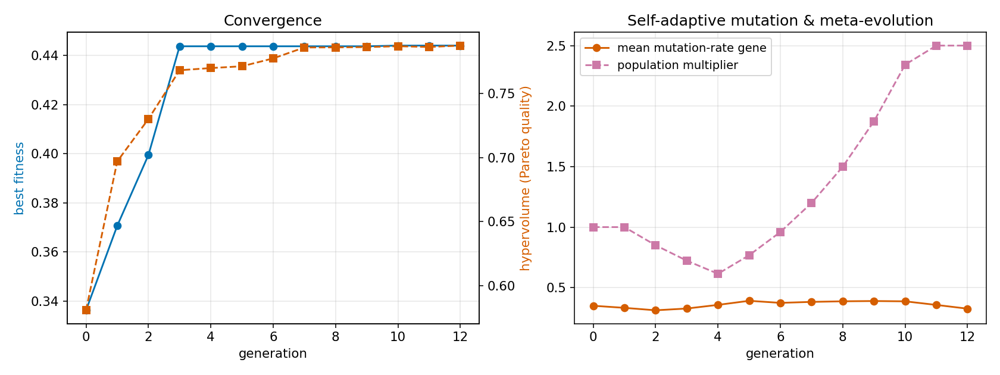
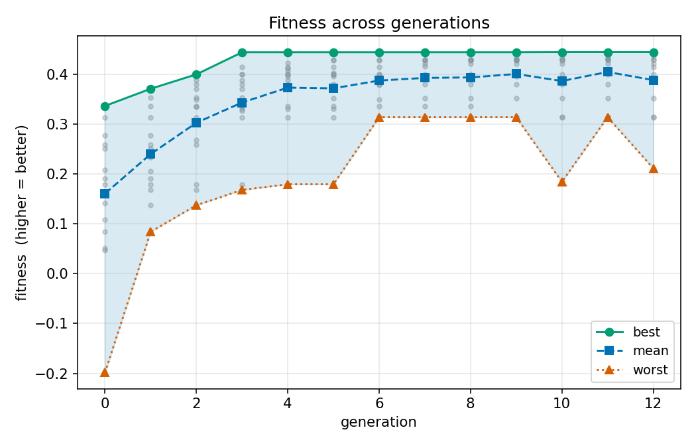
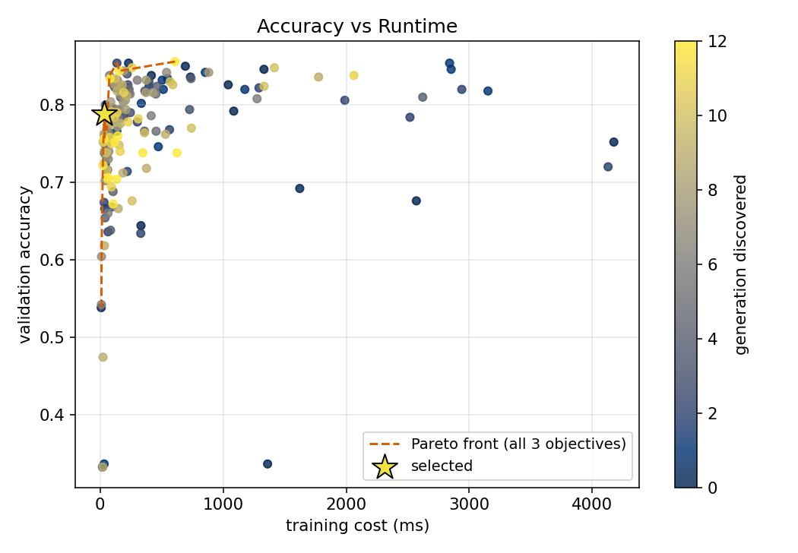
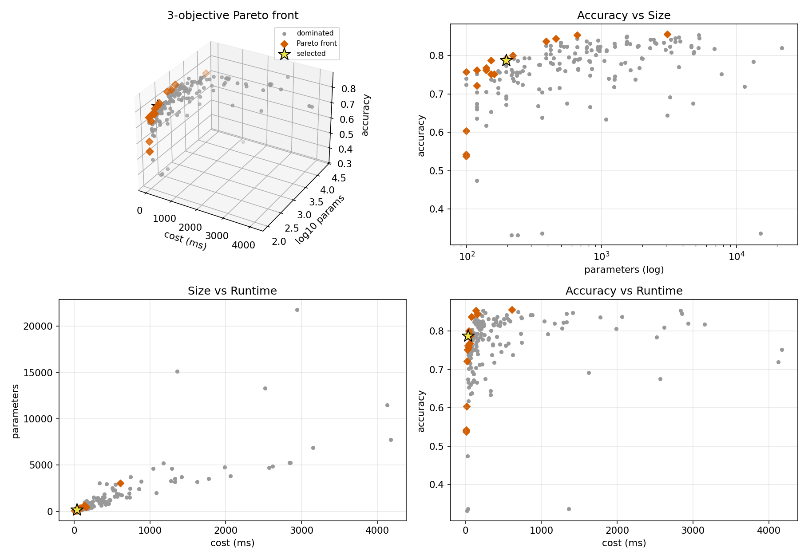

Selected model
8 | relu | lr=0.03 - validation accuracy 0.788, 195 parameters, found in generation 10. The Pareto archive holds 18 non-dominated architectures out of 181 tried.
HOLD-OUT TEST (data the evolution never saw) AutoMind-X 8 | relu | lr=0.03 test acc=0.794 cost= 33.3 ms params=195 Baseline 100 | relu | lr=0.001 test acc=0.814 cost=1059.7 ms params=2403 -> x0.08 parameters, x0.03 training cost, accuracy -0.020 vs baseline INFERENCE LATENCY (edge-deployment view, this machine) AutoMind-X batch 0.99 ms / 1000 samples | single sample p50 0.342 ms, p95 0.464 ms Baseline batch 1.19 ms / 1000 samples | single sample p50 0.273 ms, p95 0.451 ms
Pareto-optimal finalists
| Architecture | Accuracy | Cost (ms) | Parameters |
|---|---|---|---|
| 128 | tanh | lr=0.03 | 0.856 | 608.9 | 3075 |
| 16-16 | tanh | lr=0.03 | 0.854 | 136.4 | 659 |
| 16-4-4-4 | relu | lr=0.03 | 0.844 | 157.0 | 459 |
| 16 | relu | lr=0.03 | 0.838 | 76.6 | 387 |
| 8-4 | relu | lr=0.03 | 0.800 | 43.4 | 219 |
| 8 | relu | lr=0.01 | 0.792 | 49.1 | 195 |
| 8 | relu | lr=0.03 | 0.788 | 33.3 | 195 |
| 4-8 | tanh | lr=0.03 | 0.788 | 58.4 | 151 |
| 4-4-4 | tanh | lr=0.01 | 0.768 | 53.8 | 139 |
| 4-4-4-4 | tanh | lr=0.03 | 0.752 | 25.8 | 159 |
| 4-4 | tanh | lr=0.03 | 0.722 | 22.5 | 119 |
| 4 | logistic | lr=0.01 | 0.604 | 11.6 | 99 |
| 4 | tanh | lr=0.01 | 0.542 | 10.7 | 99 |
| 4 | tanh | lr=0.03 | 0.538 | 8.9 | 99 |
Figures




Full explanation
==============================================================================
AUTOMIND-X | WHY THIS ARCHITECTURE WAS SELECTED
==============================================================================
SELECTED: 8 | relu | lr=0.03 acc=0.788 cost= 33.3 ms params= 195
discovered in generation 10
[1] WHY IT QUALIFIES
- It is Pareto-optimal: none of the 181 architectures tried is better in all three
objectives at once. It strictly dominates 65 of them.
- Among the 14 Pareto-optimal finalists it is chosen for the best balanced score:
score = 0.473 (accuracy x0.6) - 0.022 (time penalty) - 0.007 (size penalty) = 0.444
accuracy rank 7 of 14 finalists
speed rank 6 of 14 finalists
compactness rank 8 of 14 finalists
[2] TRADE-OFFS vs OTHER FINALISTS (what you would give up / gain by picking them)
- most accurate : 128 | tanh | lr=0.03 -> accuracy +0.068, runtime x18.26, params x15.77
- fastest : 4 | tanh | lr=0.03 -> accuracy -0.250, runtime x0.27, params x0.51
- smallest : 4 | tanh | lr=0.03 -> accuracy -0.250, runtime x0.27, params x0.51
[3] COMPARISON WITH PREVIOUS GENERATIONS (best balanced individual of each generation)
gen 0: 16-16 | relu | lr=0.01 acc=0.854 cost= 231.3 ms params= 659 fit=+0.336
gen 3: 8-4 | relu | lr=0.03 acc=0.800 cost= 43.4 ms params= 219 fit=+0.444
gen 6: 8-4 | relu | lr=0.03 acc=0.800 cost= 43.4 ms params= 219 fit=+0.444
gen 9: 8-4 | relu | lr=0.03 acc=0.800 cost= 43.4 ms params= 219 fit=+0.444
gen 12: 8 | relu | lr=0.03 acc=0.788 cost= 33.3 ms params= 195 fit=+0.444
vs generation 0 best : accuracy -0.066, runtime x0.14, params x0.30, fitness +0.108
vs previous generation: accuracy +0.000, runtime x1.00, params x1.00, fitness +0.000
Pareto quality (hypervolume): 0.581 -> 0.787 | mean accuracy of population: 0.701 -> 0.749
[4] HOW IT EVOLVED (ancestry through the fitter parent)
gen 0: 4 | tanh | lr=0.03 random init
gen 3: 8-4 | relu | lr=0.03 crossover; activation logistic->relu
gen 6: 16 | relu | lr=0.03 crossover; remove layer 2 (4 neurons)
gen 7: 4-8 | relu | lr=0.03 crossover; resize layer 3: 16->8; remove layer 2 (4 neurons)
gen 10: 8 | relu | lr=0.03 crossover; remove layer 2 (8 neurons); resize layer 1: 4->8
[5] WHAT THE SEARCH LEARNED (across all architectures tried)
activation logistic : tried 52, mean acc 0.717, on Pareto front 2
activation relu : tried 68, mean acc 0.790, on Pareto front 8
activation tanh : tried 61, mean acc 0.769, on Pareto front 8
1 hidden layer(s) : tried 24, mean acc 0.749, on Pareto front 8
2 hidden layer(s) : tried 58, mean acc 0.758, on Pareto front 6
3 hidden layer(s) : tried 64, mean acc 0.766, on Pareto front 2
4 hidden layer(s) : tried 35, mean acc 0.770, on Pareto front 2
[6] META-EVOLUTION (self-adaptive mutation)
- population multiplier ranged 0.61..2.50; 9 generations triggered EXPLORE (stagnation -> mutate more), 3 triggered EXPLOIT (improvement -> mutate less).
- mean evolved mutation-rate gene: 0.350 -> 0.326; selected model carries gene = 0.235